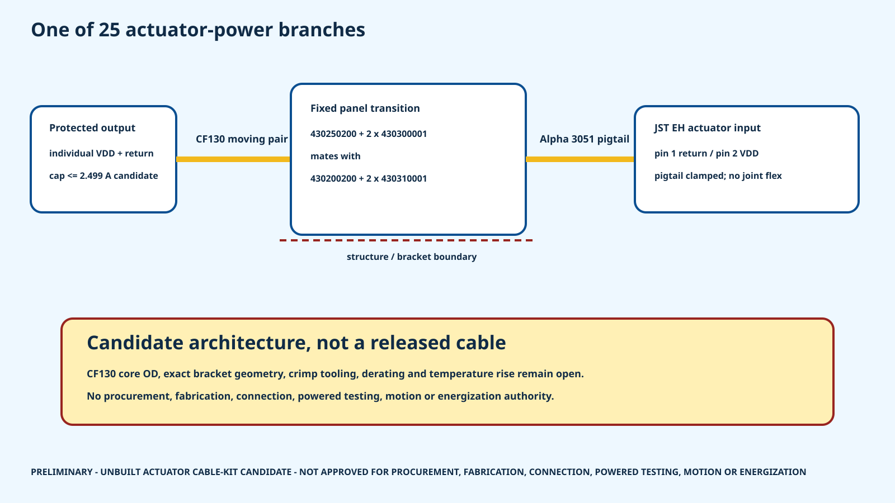

25 / 25
axis power pairs have static/dynamic 22 AWG coupon candidates
HR-30 whole-body P0.1
Alpha Wire 3051 is the static suspended-commissioning coupon candidate. CF130.03.02.UL is the dynamic coupon candidate. CF9 is rejected for actuator power, and outgoing bus links remain data-only.
axis power pairs have static/dynamic 22 AWG coupon candidates
controlled actuator connector-cavity records
outgoing GND/VDD cavities required empty
released cables, crimp processes, protection devices or powered permissions

ROBOTIS uses EHR-03/EHR-04 notation. JST's current canonical housing models are EHR-3 and EHR-4, with standard contact SEH-001T-P0.6. Low-insertion-force contacts are rejected for this walking-vibration candidate because JST identifies reduced vibration resistance.
The order-code family is now explicit, but received mating fit, tooling, crimp quality and retention are still unverified.
Do not crimp or connect either candidate yet. igus publishes 0.34 mm² nominal conductors; JST publishes a 0.33 mm² maximum for the standard EH contact. The 0.01 mm² mismatch requires written supplier approval or a different cable/contact choice plus coupon tests.
| Axis | Bus | Candidate cap | Published stall endpoint | Round-trip planning length | Wire/contact disposition |
|---|---|---|---|---|---|
| WAIST_YAW | RS-WAIST | 2.499010 A | 4.400 A | 149.231 mm | STATIC CANDIDATE PASS AT PUBLISHED AWG22 / 1.575 MM OD; DYNAMIC 0.34 VS 0.33 MM2 WRITTEN-DISPOSITION HOLD |
| HEAD_PAN | TTL-HEAD | 0.700000 A | 0.880 A | 148.650 mm | STATIC CANDIDATE PASS AT PUBLISHED AWG22 / 1.575 MM OD; DYNAMIC 0.34 VS 0.33 MM2 WRITTEN-DISPOSITION HOLD |
| HEAD_TILT | TTL-HEAD | 0.700000 A | 0.880 A | 227.418 mm | STATIC CANDIDATE PASS AT PUBLISHED AWG22 / 1.575 MM OD; DYNAMIC 0.34 VS 0.33 MM2 WRITTEN-DISPOSITION HOLD |
| L_SHOULDER_PITCH | RS-LARM | 1.998670 A | 2.300 A | 229.447 mm | STATIC CANDIDATE PASS AT PUBLISHED AWG22 / 1.575 MM OD; DYNAMIC 0.34 VS 0.33 MM2 WRITTEN-DISPOSITION HOLD |
| L_SHOULDER_ROLL | RS-LARM | 1.998670 A | 2.300 A | 229.447 mm | STATIC CANDIDATE PASS AT PUBLISHED AWG22 / 1.575 MM OD; DYNAMIC 0.34 VS 0.33 MM2 WRITTEN-DISPOSITION HOLD |
| L_ELBOW_PITCH | RS-LARM | 1.998670 A | 2.300 A | 289.499 mm | STATIC CANDIDATE PASS AT PUBLISHED AWG22 / 1.575 MM OD; DYNAMIC 0.34 VS 0.33 MM2 WRITTEN-DISPOSITION HOLD |
| L_WRIST_ROTATION | TTL-LDIST | 0.700000 A | 0.880 A | 534.762 mm | STATIC CANDIDATE PASS AT PUBLISHED AWG22 / 1.575 MM OD; DYNAMIC 0.34 VS 0.33 MM2 WRITTEN-DISPOSITION HOLD |
| L_GRIPPER | TTL-LDIST | 0.700000 A | 0.880 A | 615.449 mm | STATIC CANDIDATE PASS AT PUBLISHED AWG22 / 1.575 MM OD; DYNAMIC 0.34 VS 0.33 MM2 WRITTEN-DISPOSITION HOLD |
| L_HIP_YAW | RS-LLEG | 2.499010 A | 4.900 A | 291.091 mm | STATIC CANDIDATE PASS AT PUBLISHED AWG22 / 1.575 MM OD; DYNAMIC 0.34 VS 0.33 MM2 WRITTEN-DISPOSITION HOLD |
| L_HIP_ROLL | RS-LLEG | 2.499010 A | 4.900 A | 251.724 mm | STATIC CANDIDATE PASS AT PUBLISHED AWG22 / 1.575 MM OD; DYNAMIC 0.34 VS 0.33 MM2 WRITTEN-DISPOSITION HOLD |
| L_HIP_PITCH | RS-LLEG | 2.499010 A | 4.900 A | 212.678 mm | STATIC CANDIDATE PASS AT PUBLISHED AWG22 / 1.575 MM OD; DYNAMIC 0.34 VS 0.33 MM2 WRITTEN-DISPOSITION HOLD |
| L_KNEE_PITCH | RS-LLEG | 2.499010 A | 4.900 A | 228.244 mm | STATIC CANDIDATE PASS AT PUBLISHED AWG22 / 1.575 MM OD; DYNAMIC 0.34 VS 0.33 MM2 WRITTEN-DISPOSITION HOLD |
| L_ANKLE_PITCH | RS-LLEG | 1.998670 A | 2.300 A | 535.508 mm | STATIC CANDIDATE PASS AT PUBLISHED AWG22 / 1.575 MM OD; DYNAMIC 0.34 VS 0.33 MM2 WRITTEN-DISPOSITION HOLD |
| L_ANKLE_ROLL | RS-LLEG | 1.998670 A | 2.300 A | 575.392 mm | STATIC CANDIDATE PASS AT PUBLISHED AWG22 / 1.575 MM OD; DYNAMIC 0.34 VS 0.33 MM2 WRITTEN-DISPOSITION HOLD |
| R_SHOULDER_PITCH | RS-RARM | 1.998670 A | 2.300 A | 229.447 mm | STATIC CANDIDATE PASS AT PUBLISHED AWG22 / 1.575 MM OD; DYNAMIC 0.34 VS 0.33 MM2 WRITTEN-DISPOSITION HOLD |
| R_SHOULDER_ROLL | RS-RARM | 1.998670 A | 2.300 A | 229.447 mm | STATIC CANDIDATE PASS AT PUBLISHED AWG22 / 1.575 MM OD; DYNAMIC 0.34 VS 0.33 MM2 WRITTEN-DISPOSITION HOLD |
| R_ELBOW_PITCH | RS-RARM | 1.998670 A | 2.300 A | 289.499 mm | STATIC CANDIDATE PASS AT PUBLISHED AWG22 / 1.575 MM OD; DYNAMIC 0.34 VS 0.33 MM2 WRITTEN-DISPOSITION HOLD |
| R_WRIST_ROTATION | TTL-RDIST | 0.700000 A | 0.880 A | 534.762 mm | STATIC CANDIDATE PASS AT PUBLISHED AWG22 / 1.575 MM OD; DYNAMIC 0.34 VS 0.33 MM2 WRITTEN-DISPOSITION HOLD |
| R_GRIPPER | TTL-RDIST | 0.700000 A | 0.880 A | 615.449 mm | STATIC CANDIDATE PASS AT PUBLISHED AWG22 / 1.575 MM OD; DYNAMIC 0.34 VS 0.33 MM2 WRITTEN-DISPOSITION HOLD |
| R_HIP_YAW | RS-RLEG | 2.499010 A | 4.900 A | 291.091 mm | STATIC CANDIDATE PASS AT PUBLISHED AWG22 / 1.575 MM OD; DYNAMIC 0.34 VS 0.33 MM2 WRITTEN-DISPOSITION HOLD |
| R_HIP_ROLL | RS-RLEG | 2.499010 A | 4.900 A | 251.724 mm | STATIC CANDIDATE PASS AT PUBLISHED AWG22 / 1.575 MM OD; DYNAMIC 0.34 VS 0.33 MM2 WRITTEN-DISPOSITION HOLD |
| R_HIP_PITCH | RS-RLEG | 2.499010 A | 4.900 A | 212.678 mm | STATIC CANDIDATE PASS AT PUBLISHED AWG22 / 1.575 MM OD; DYNAMIC 0.34 VS 0.33 MM2 WRITTEN-DISPOSITION HOLD |
| R_KNEE_PITCH | RS-RLEG | 2.499010 A | 4.900 A | 228.244 mm | STATIC CANDIDATE PASS AT PUBLISHED AWG22 / 1.575 MM OD; DYNAMIC 0.34 VS 0.33 MM2 WRITTEN-DISPOSITION HOLD |
| R_ANKLE_PITCH | RS-RLEG | 1.998670 A | 2.300 A | 535.508 mm | STATIC CANDIDATE PASS AT PUBLISHED AWG22 / 1.575 MM OD; DYNAMIC 0.34 VS 0.33 MM2 WRITTEN-DISPOSITION HOLD |
| R_ANKLE_ROLL | RS-RLEG | 1.998670 A | 2.300 A | 575.392 mm | STATIC CANDIDATE PASS AT PUBLISHED AWG22 / 1.575 MM OD; DYNAMIC 0.34 VS 0.33 MM2 WRITTEN-DISPOSITION HOLD |
Connector family · 25 axis candidates · 159 cavity records · Data candidates · Inspection/test plan · Open holds · Primary sources
All measured values remain NONE and every execution state remains NOT EXECUTED.